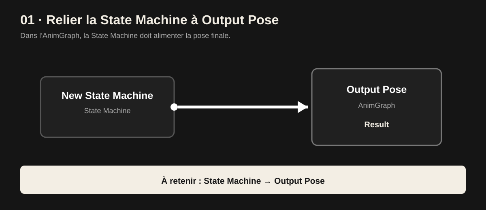
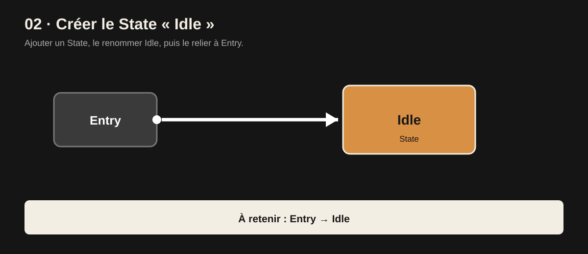
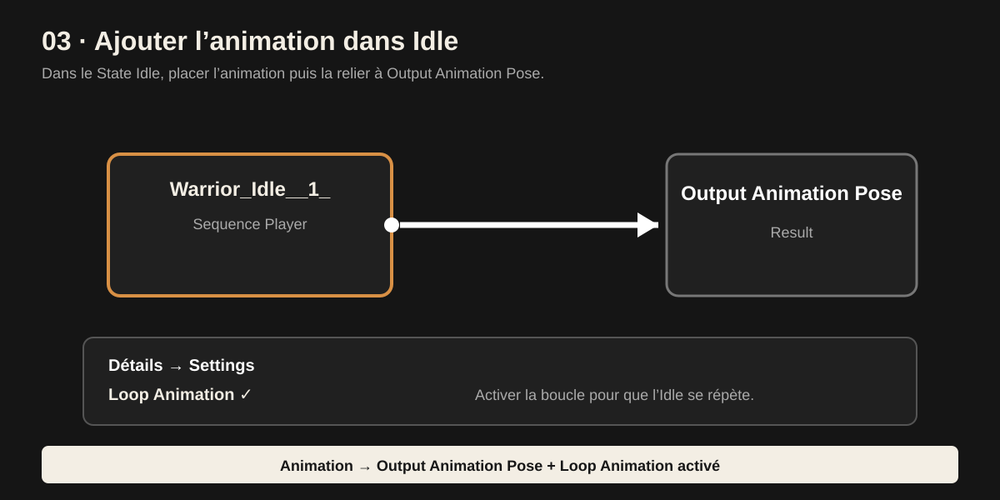
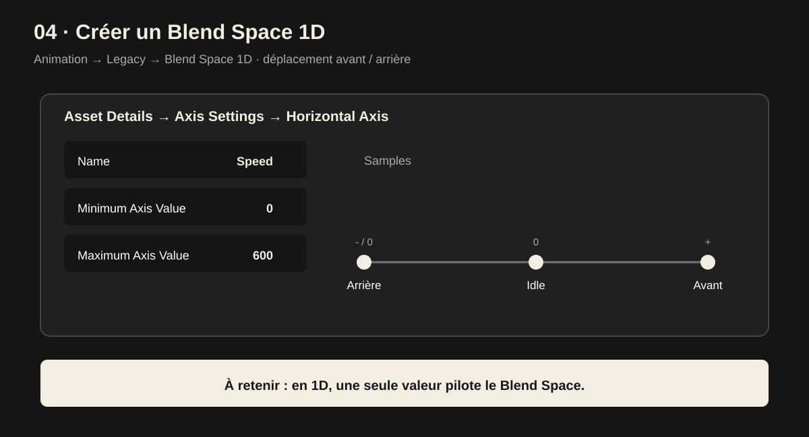
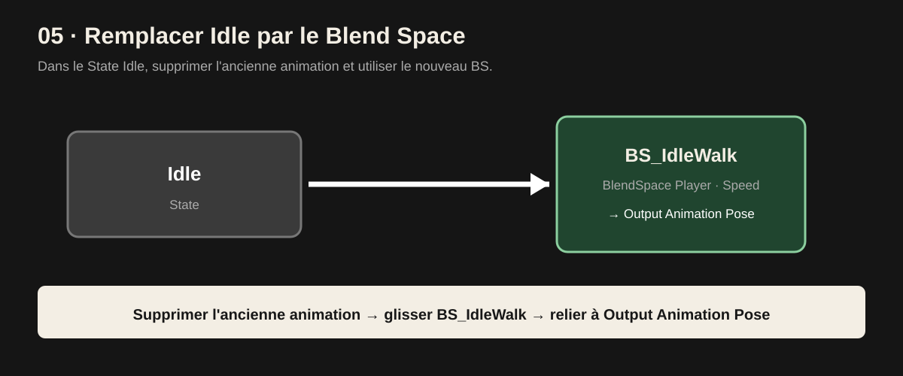
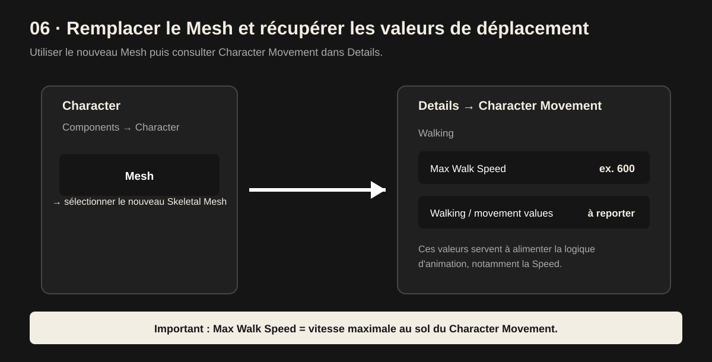
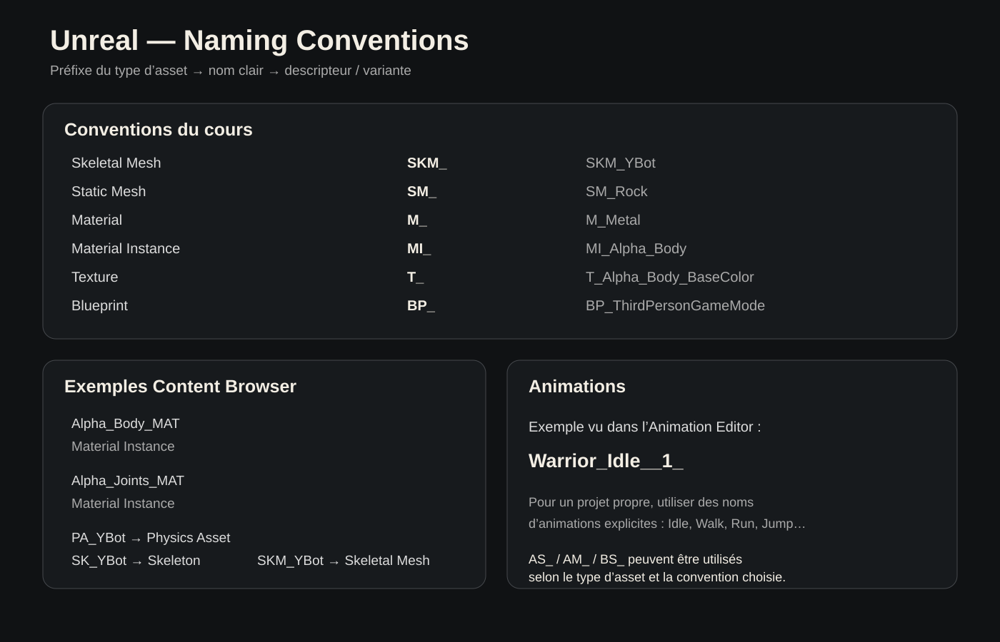

Vue d'ensemble
Commence par les notions ci-dessous, puis utilise les fiches détaillées comme support de révision.
Construire le gameplay avec des nœuds et des événements.
Stocker, modifier et transmettre les valeurs du jeu.
Nommer les assets pour retrouver vite le bon fichier.
Blueprints
Les fiches ci-dessous reprennent les logiques vues dans ton cours, dans l'ordre où il est utile de les comprendre.
01 · Overlap → vérifier le joueur → Branch
Overlap
On Component Begin Overlap déclenche la logique lorsqu'un acteur entre dans la zone.
Récupérer le joueur
Get Player Character permet d'obtenir le Character du joueur.
Comparer
== vérifie si l'acteur détecté correspond au joueur.
Branch
True continue la logique ; False arrête cette branche.
02 · Modifier une variable avec un Custom Event

Player Coins = Player Coins + 1
| Étape | Nœud | Action | Exemple |
|---|---|---|---|
| 01 | Custom Event | Lance la logique | Increase Coin |
| 02 | Get | Récupère la valeur actuelle | Player Coins |
| 03 | + | Ajoute une valeur | +1 |
| 04 | Set | Enregistre la nouvelle valeur | Set Player Coins |
| 05 | Print String | Affiche le résultat | Player Coins |
Custom Event → Get → + → Set. Le Custom Event sert ici de point de départ pour modifier la variable.03 · Afficher une variable
Event Tick déclenche régulièrement la chaîne ; la valeur est convertie en texte puis envoyée à Print String.
Event Tick
Déclenche la chaîne d'exécution.
Player Coins
Valeur numérique à afficher.
To String
Convertit la valeur en texte.
Print String
Affiche le résultat à l'écran / dans le log.
04 · Ramasser une pièce

- On Component Begin Overlap détecte l'entrée dans la sphère.
- Get Player Character récupère le personnage.
- == vérifie l'identité du joueur.
- Branch continue uniquement si True.
- Get Game Mode récupère le GameMode actif.
- Cast to BP_ThirdPersonGameMode permet d'utiliser ses fonctions.
- Increase Coin augmente le compteur.
- Destroy Actor supprime la pièce.
Animation : State Machine
Workflow à retenir pour mettre en place une animation Idle dans l'AnimGraph.
01 · Relier la State Machine à Output Pose

Output Pose pour envoyer la pose finale à l'AnimGraph.02 · Créer le State « Idle »

Ajouter un State
Créer un nouveau State dans la State Machine.
Le renommer
Nommer le State Idle.
Relier Entry
Relier Entry vers Idle pour définir l'état de départ.
03 · Ajouter l'animation dans Idle

Ouvrir Idle
Entrer dans le State Idle.
Ajouter l'animation
Placer l'animation Warrior_Idle__1_ dans le State.
Relier la pose
Relier le Sequence Player à Output Animation Pose.
Activer la boucle
Dans Détails → Settings, activer Loop Animation.
Loop Animation n'est pas activé, l'animation Idle ne se répète pas en boucle.Blend Space 1D & déplacement
Pour un déplacement uniquement avant / arrière, on utilise un Blend Space 1D piloté par une seule valeur : Speed. Epic décrit le Blend Space 1D comme un système de mélange basé sur un seul axe.
01 · Créer le Blend Space 1D

Créer le BS
Dans le dossier Animation : Animation → Legacy → Blend Space 1D.
Nommer l'axe
Dans Asset Details → Axis Settings, nommer l'axe Speed.
Définir le Maximum Axis Value
Mettre le Maximum Axis Value à la valeur correspondant à la vitesse maximale de ton Character Movement, notamment Max Walk Speed.
Ajouter les animations
Placer les animations de déplacement sur l'axe : arrière, Idle si nécessaire, puis avant.
02 · Remplacer l'animation Idle par le Blend Space

Supprimer l'ancienne animation
Dans le State Idle, supprimer le Sequence Player de l'ancienne animation.
Ajouter le Blend Space
Glisser BS_IdleWalk dans le State.
Relier la sortie
Relier le Blend Space Player à Output Animation Pose.
Speed servira à choisir / mélanger les animations.03 · Mesh & Character Movement

Remplacer le Mesh
Dans le Character, sélectionner le Skeletal Mesh que tu viens d'importer.
Ouvrir Character Movement
Dans la liste des composants à gauche, sélectionner Character Movement, puis regarder le panneau Details.
Ouvrir Walking
Dans Details → Character Movement: Walking, récupérer les valeurs utiles au déplacement.
| Valeur | Rôle | Pourquoi la noter |
|---|---|---|
Max Walk Speed | Vitesse maximale au sol | Référence principale pour le Maximum Axis Value |
Max Acceleration | Accélération maximale | Permet de comprendre la montée en vitesse |
Braking Deceleration Walking | Décélération à pied sans accélération | Influence le ralentissement du personnage |
Ground Friction | Friction au sol | Influence le comportement lors du déplacement / freinage |
Max Walk Speed correspond à la vitesse maximale au sol du Character Movement. C'est donc la valeur à vérifier en priorité pour régler l'échelle de Speed.Types de variables
Une variable stocke une valeur ou une référence. Unreal propose plusieurs types de données ; les principaux types sont identifiables visuellement dans les Blueprints.
| Type | Valeur / exemple | À quoi ça sert | Mémo |
|---|---|---|---|
| Boolean | 0 / 1 | Vrai ou faux | true / false |
| Float | 0.01 | Nombre décimal | 0.5, 1.25 |
| Integer | 1 | Nombre entier | 0, 10 |
| String | text code | Chaîne de caractères | Texte technique |
| Text | text user | Texte destiné à l'utilisateur | UI / affichage |
| Vector | X Y Z | Position ou direction 3D | X, Y, Z |
| Rotator | X / Y / Z | Rotation 3D | Pitch / Yaw / Roll |
| Transform | Location + Rotation + Scale | Décrit la transformation complète | Position + rotation + échelle |
Vector = X,Y,Z · Rotator = rotation · Transform = position + rotation + scale.Conventions de nommage
Le but est simple : reconnaître le type d'asset immédiatement dans le Content Browser et éviter les noms ambigus. Epic recommande une convention structurée basée sur un préfixe, un nom, un descripteur et éventuellement une variante.
Fiche visuelle du cours

[PREFIX]_[NOM]_[DESCRIPTEUR]_[VARIANTE]
| Asset | Préfixe | Exemple |
|---|---|---|
| Skeletal Mesh | SKM_ | SKM_YBot |
| Static Mesh | SM_ | SM_Rock |
| Material | M_ | M_Metal |
| Material Instance | MI_ | MI_Alpha_Body |
| Texture | T_ | T_Alpha_Body_BaseColor |
| Blueprint | BP_ | BP_ThirdPersonGameMode |
| Player Controller | PC_ | PC_Player |
| GameMode | GM_ | GM_ThirdPerson |
SK_ pour Skeletal Mesh et AS_ pour Animation Sequence. Pour l'examen, garde la convention demandée par ton enseignant ; pour un projet personnel, choisis une convention et applique-la partout.Exemples de tes captures
Matériaux : Alpha_Body_MAT · Alpha_Joints_MAT
YBot : PA_YBot = Physics Asset · SK_YBot = Skeleton · SKM_YBot = Skeletal Mesh
Animation : Warrior_Idle__1_
Animations claires : Idle · Walk · Run · Jump
Snap & manipulation
SNAP
Active l'option de Snap pour faciliter le placement.
F
Focus / cadrage sur l'objet sélectionné.
Alt
Permet de tourner autour de l'objet ou de dupliquer pendant un déplacement selon le contexte.
Shift
Déplacement avec l'objet selon le workflow présenté en cours.
Raccourcis indispensables
| Raccourci | Action | À retenir |
|---|---|---|
| Z | Déplacer | Translation de l'objet |
| E | Rotation | Faire tourner l'objet |
| R | Scale | Modifier la taille |
| Space | Changer d'outil | Basculer l'outil actif |
| F | Focus | Cadrer la sélection |
| Alt + clic gauche | Orbiter | Tourner autour de la scène / objet |
| Molette | Zoom | Rapprocher / éloigner la vue |
| Molette + déplacement | Pan | Déplacer la vue |
| Clic droit + WASD | Caméra libre | Se déplacer dans la scène |
| G | Game View | Basculer la vue jeu |
| Alt + déplacement | Dupliquer | Créer une copie pendant le déplacement |
| Ctrl + D | Dupliquer | Créer une copie |
| Delete | Supprimer | Supprimer la sélection |
| Ctrl + S | Sauvegarder | Enregistrer le projet |
| Ctrl + Z | Annuler | Revenir en arrière |
| Ctrl + Shift + Z | Rétablir | Refaire l'action |
| Ctrl + P | Recherche rapide | Retrouver rapidement une commande / asset |
| C | Commentaire Blueprint | Créer / utiliser un commentaire |
🧠 Fiche express
Z déplacer · E tourner · R scaler · F cadrer · Alt + déplacement dupliquer · Ctrl + S sauvegarder · Ctrl + Z annuler.
Ressources & workflow
Personnages & animations
Télécharger un personnage et/ou des animations, puis organiser les assets dans Unreal avec une convention de nommage claire.
Ouvrir Mixamo →Modèles 3D pour Unreal
Rechercher un modèle compatible et vérifier avant import le format, le rig, les textures et les conditions d'utilisation.
Voir les modèles Unreal →Télécharger
Choisir le personnage ou l'animation dont tu as besoin.
Vérifier
Contrôler format, skeleton / rig, textures et droits d'utilisation.
Importer
Importer dans le Content Browser et ranger dans les bons dossiers.
Renommer
Appliquer immédiatement la convention de nommage du projet.